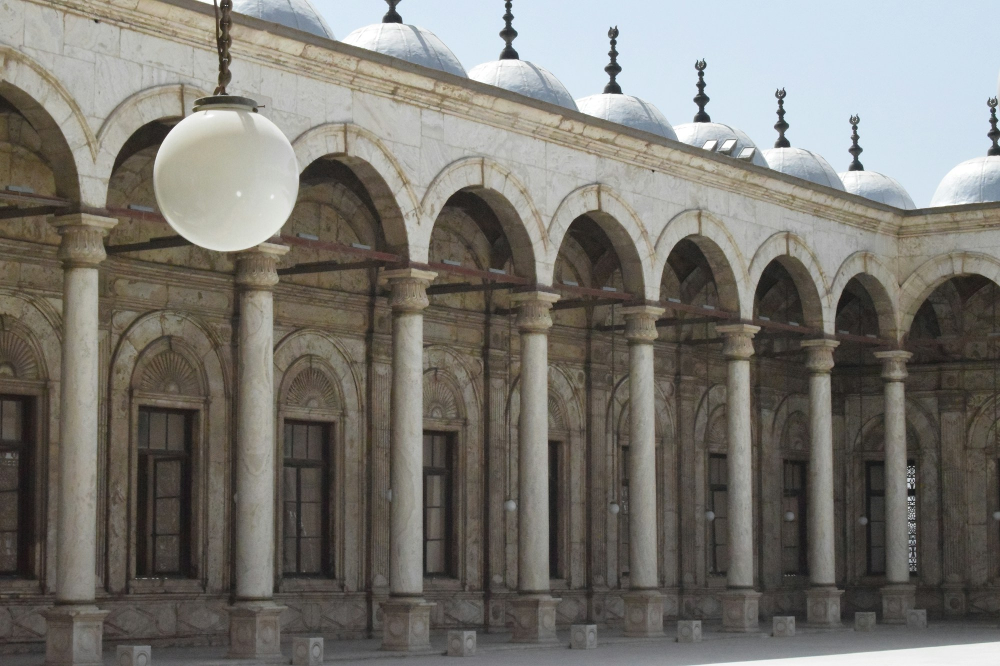
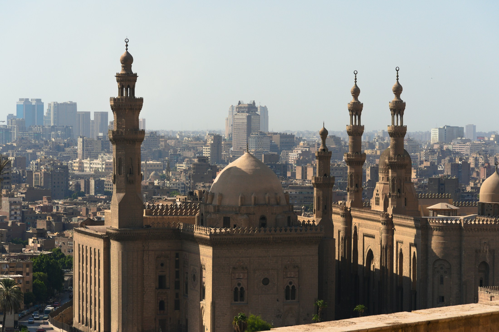

Satu Website untuk Seluruh Perjalanan Santri ke Al-Azhar Kairo
Satu website, dua layanan. Pendaftaran calon santri, pemantauan akademik, sampai keuangan wali kini rapi dalam satu sistem: dari persiapan berkas sampai wisuda di Mesir.
Satu Website, Dua Layanan Utama
Semua kebutuhan digital Hamasah ada di satu website. Sistem otomatis memisahkan mana yang terbuka untuk calon santri baru, dan mana portal terkunci untuk keluarga santri serta tim di Kairo.
Kenal Hamasah, Siapkan Keberangkatan
Tempat calon santri dan orang tua mengenal Hamasah, memahami kuliah di Al-Azhar Kairo, lalu mendaftar dan memantau persiapan keberangkatan sendiri.
Ruang Belajar, Pantau, dan Keuangan
Portal login khusus untuk keluarga santri di tanah air, santri di Kairo, musyrif asrama, dan tim keuangan. Semua data aman dan terenkripsi.
Dari Daftar Sampai Lulus dalam Satu Alur
Cari info di gerbang publik, isi formulir online, lalu pantau akun persiapan keberangkatan Al-Azhar.
Tinggal di asrama Rumah 1 Madinat Nasr, ikut talaqqi masyaikh, dan didampingi musyrif berpengalaman.
Orang tua di Indonesia melihat rapor adab berkala dan mengunduh kuitansi SPP resmi kapan saja.
Gerbang Publik & Pendaftaran
Halaman terbuka untuk siapa saja yang ingin mengenal Hamasah, sekaligus jalur mandiri buat calon santri mempersiapkan keberangkatan Al-Azhar Kairo dengan transparan.
Info Jelas, Daftar Gampang, Pasti Berangkat Sejak Awal
Persiapan studi ke Mesir sering bikin bingung. Di Layanan Publik Hamasah, calon santri dan orang tua bisa langsung melihat profil resmi lembaga, panduan hidup di Kairo, dan membuat akun registrasi keberangkatan sendiri tanpa perantara.
Fasilitas asrama Rumah 1 Madinat Nasr, kurikulum talaqqi, dan perkiraan biaya hidup di Kairo, semua transparan.
Formulir digital yang otomatis terverifikasi dan langsung tersambung ke narahubung panitia keberangkatan.
Tanya soal dokumen ijazah, pemantapan bahasa Markaz Lughoh, sampai panduan persiapan ke Kairo, kapan saja.
Ahmad Raihan Pratama
Tanya Apa Saja, Dijawab Saat Itu Juga
AI yang paham konteks Hamasah: dari menjawab pertanyaan berulang calon santri dan wali, sampai membantu santri lebih paham materi kelas online. Berikut tampilan demonya.
Asisten AI Hamasah
Assalamu'alaikum
Ada yang bisa kami bantu?
Mulai dari contoh di bawah
Ini simulasi. Pada versi live, jawaban ditarik dari basis data resmi Hamasah International dan bisa langsung menyambungkan kamu ke admin WhatsApp.
Pantau Kabar Ananda dari Rumah
Satu tempat untuk orang tua memantau kabar anak di Kairo: kesehatan, ibadah, nilai Al-Azhar, kegiatan harian, sampai rapor digital berkala. Biar hati tenang meski jauh.
Ahmad Raihan
Rekap Capaian Mata Pelajaran & Halaqah Al-Azhar
5 Mata Uji · Seluruhnya Tuntas| Mata Pelajaran / Halaqah | Pengajar / Syeikh | Target Semester | Capaian Ananda | Nilai | Predikat | Status |
|---|---|---|---|---|---|---|
|
Tahfidz Al-Qur'an Bersanad
Halaqah Tajwid & Qira'at Riwayat Hafs
|
Syeikh Dr. Mustafa Al-Azhari | 6 Juz Mutqin | 7 Juz Mutqin | 96 | Mumtaz Murtafi' | Melampaui Target |
|
Nahwu & I'rob (Matan Al-Ajurrumiyyah)
Analisis Tarkib Kaidah Bahasa Arab Fusha
|
Syeikh Hasan Al-Banna, M.A. | Khatam Bab I'rob | Khatam & Ujian Lisan | 95 | Mumtaz | Lulus Sempurna |
|
Fiqh Madzhab Syafi'i (Fathul Qorib)
Bab Thaharah, Sholat & Ibadah Amaliah
|
Ustaz Farhan Abdullah, Lc. | Pasal 1 sampai 12 | Pasal 1 sampai 14 | 94 | Mumtaz | Lulus Sempurna |
|
Muhadatsah & Dikte Arab (Imla' Mufrodat)
Percakapan Fusha & Dikte Tulisan Ilmiah
|
Ustaz Ziyad Karim, Lc. | Kecakapan Dialog B2 | Sangat Fasih & Aktif | 92 | Mumtaz | Lulus Sempurna |
|
Adab Penuntut Ilmu & Disiplin Asrama
Sholat Berjamaah, Kebersihan & Kepedulian Sosial
|
Pengawas Rumah 1 Kairo | Indeks Disiplin 90% | 98.8% Kehadiran | 98 | Mumtaz Murtafi' | Santri Teladan |
Catatan Kendala Adaptasi Santri & Solusi Nyata Musyrif Asrama
Hidup mandiri di negeri asing adalah sarana pendewasaan santri. Di Hamasah International, setiap dinamika adaptasi ananda dipantau secara langsung dan didampingi dengan solusi konkret hingga tuntas, sehingga orang tua dapat memantau proses tumbuh kembang ananda dengan rasa tenang.
Ananda sangat fasih berbahasa Arab formal (Fusha), namun pada pekan-pekan awal sempat merasa ragu saat diajak berbicara dialek lokal (Ammiyah) oleh pedagang buah dan roti di sekitar Madinat Nasr.
Musyrif Rumah 1 (Ustaz Farhan) mengadakan sesi bimbingan santai 15 menit setiap sore ba'da Ashar untuk mengenalkan ungkapan pasar sehari-hari, serta mendampingi ananda berbelanja kebutuhan pokok bersama.
Ananda kini sangat percaya diri, luwes bertransaksi secara mandiri, dan bahkan sering membantu rekan-rekan serumahnya saat belanja pekanan.
Perbedaan selisih waktu 5 jam dengan WIB dan suhu Kairo yang relatif sejuk sempat membuat ritme bangun ananda sedikit penyesuaian pada 10 hari pertama kedatangan.
Musyrif mengatur jadwal qailulah (tidur siang sunnah) 45 menit sebelum Dzuhur, memastikan santri tidur malam tepat pukul 22.00, serta menyediakan minuman herbal hangat dan madu asli Mesir di dapur asrama.
Ritme biologis ananda stabil sempurna. Ananda selalu bangun segar pukul 03.45 untuk qiyamul lail dan hadir di shaf pertama sholat Subuh berjamaah.
Ananda berkeinginan mencatat penjelasan syarah masyayikh di Rawaq Al-Azhar dengan tempo yang lebih cepat agar tidak tertinggal faedah berharga dari kalam guru.
Pembina menyediakan lembar matan berharakat pra-cetak dan mengadakan latihan imla' terarah bersama santri senior di Rumah 1 setiap Selasa dan Kamis malam.
Kecepatan menulis ananda meningkat lebih dari 80%. Tulisan tangan Arab ananda sangat rapi dan kerap menjadi rujukan belajar rekan sekelasnya.
Ustaz Farhan Abdullah, Lc.
Musyrif Pembina Rumah 1 · Madinat Nasr Kairo"Kepada Bapak Hendra Kusuma dan keluarga yang kami hormati, Ananda Ahmad Raihan adalah permata di asrama kami. Beliau memiliki kelembutan adab, ketekunan hafalan, dan rasa persaudaraan yang tinggi. Setiap proses belajar dijalani dengan senyuman dan keikhlasan. Insya Allah ananda berada di jalur yang sangat tepat untuk menjadi kader ulama masa depan."
Kirim Pesan Doa & Semangat untuk Ananda
Pesan dari Bapak & Ibu akan diteruskan oleh musyrif asrama pada saat halaqah malam di Rumah 1 Madinat Nasr.
Rutinitas 24 Jam Santri di Kairo
Jadwal teratur yang memadukan ibadah istiqomah, perkuliahan Al-Azhar, kajian turats, dan waktu istirahat yang berkualitas.
Qiyamul Lail & Sholat Subuh Berjamaah
Bangun pagi, sholat sunnah malam mandiri, sholat Subuh berjamaah di masjid asrama, dilanjutkan wirid Al-Ma'tsurat dan halaqah muroja'ah hafalan Al-Qur'an.
Kedisiplinan 100%Sarapan Bergizi & Persiapan Dars
Mandi pagi, sarapan bersama menu sehat di ruang makan Rumah 1, merapikan kamar asrama, dan persiapan perlengkapan kitab perkuliahan.
Gizi & KebersihanPerkuliahan Ma'had Al-Azhar Kairo
Mengikuti materi Nahwu, Shorof, Balaghah, dan Fiqh bersama para masyayikh dan dosen Al-Azhar penutur asli bahasa Arab.
Akademik UtamaSholat Dzuhur, Makan Siang & Qailulah
Sholat Dzuhur berjamaah, makan siang masakan nusantara hangat bergizi, dan tidur siang sunnah (qailulah) 45 menit untuk memulihkan stamina.
Kebugaran FisikMajelis Talaqqi di Rawaq Al-Azhar
Menyimak pengajian kitab turats matan Fathul Qorib dan Tuhfatul Athfal langsung di selasar Masjid Al-Azhar Kairo Lama.
Sanad TuratsSholat Maghrib-Isya & Mudzakarah Rumah 1
Sholat berjamaah, makan malam, dan belajar kelompok terbimbing (mudzakarah) bersama santri serumah dipandu oleh musyrif asrama.
Belajar MandiriIstirahat Malam Teratur & Nyaman
Lampu kamar dimatikan untuk menjaga siklus tidur alami. Kamar asrama dilengkapi pendingin ruangan (AC) yang sejuk dan bersih.
Istirahat 7 JamGaleri Momen Dokumentasi Kebaikan Ananda
Potret autentik keseharian ananda dalam menuntut ilmu, bersosialisasi di asrama, dan beribadah di Mesir.

Talaqqi SanadKhusyuk Menyimak di Rawaq Al-Azhar
Ananda Ahmad Raihan duduk di barisan depan selasar Masjid Al-Azhar, mencatat mutiara faidah syarah kitab langsung dari ulama terkemuka Kairo.
 Mudzakarah Rumah 1
Mudzakarah Rumah 1
Mudzakarah Hangat Bersama Teman Serumah
Suasana ruang belajar asrama Rumah 1 Madinat Nasr yang nyaman, berhawa sejuk, dan penuh semangat saat mengulang bait-bait nahwu sebelum istirahat malam.
 Bimbingan Musyrif
Bimbingan Musyrif
Sesi Bimbingan Santai Ba'da Ashar
Ustaz Farhan Abdullah mendampingi ananda dalam memperkaya kosakata bahasa percakapan harian dan memastikan tidak ada kesulitan belajar yang dihadapi.

Lingkungan SehatLingkungan Asrama Madinat Nasr yang Asri & Aman
Kompleks tempat tinggal santri berada di distrik Madinat Nasr yang tenang, dekat masjid, apotek, pasar buah segar, dan akses mudah menuju kampus Al-Azhar.
Arsip Kuitansi Sah & Transparansi Keuangan Santri
Seluruh pembayaran SPP Bulanan dan administrasi asrama terdata otomatis dalam mata uang Rupiah dan dapat diunduh kapan saja sebagai bukti sah.
| Nomor Dokumen | Uraian Pembayaran | Periode / Bulan | Nominal (Rupiah) | Tanggal Bayar | Status Validasi | Aksi Dokumen |
|---|---|---|---|---|---|---|
KWT/HI/2026/08492 |
SPP Bulanan Rumah 1 (Akomodasi, Makan 3x, Bimbingan Musyrif) | Maret 2026 | Rp 2.500.000 | 01 Mar 2026 | Lunas Sah (Kairo) | |
KWT/HI/2026/08120 |
SPP Bulanan Rumah 1 (Akomodasi, Makan 3x, Bimbingan Musyrif) | Februari 2026 | Rp 2.500.000 | 01 Feb 2026 | Lunas Sah (Kairo) | |
KWT/HI/2026/07945 |
Bayar Iqomah & Legalitas Pelajar Mesir (Visa Pelajar 1 Tahun) | Januari 2026 | Rp 1.750.000 | 15 Jan 2026 | Lunas Sah (Kairo) | |
KWT/HI/2026/07812 |
SPP Bulanan Rumah 1 (Akomodasi, Makan 3x, Bimbingan Musyrif) | Januari 2026 | Rp 2.500.000 | 01 Jan 2026 | Lunas Sah (Kairo) |
Ruang Belajar Santri & Pembina
Kelas online santri dan pembina: video talaqqi kitab klasik Al-Azhar, modul interaktif, dan teman belajar AI yang siap 24 jam.
Kurikulum Santri & Belajar Mandiri
Akses materi video talaqqi kitab klasik Al-Azhar yang dirancang khusus Hamasah International, pantau progress maddah, tugas harian, dan konsultasi interaktif bersama AI Study Partner.
Dashboard Pembina & Musyrif Asrama
Distribusi materi video talaqqi, modul kitab PDF, evaluasi tugas santri, rekap presensi harian, serta pencatatan adab santri untuk orang tua.
-
01
Definisi Thaharah: Pengangkatan hadats atau pembersihan najis yang menghalangi sahnya pelaksanaan ibadah shalat.
-
02
6 Fardhu Wudhu: Niat bersamaan membasuh muka, membasuh seluruh wajah, membasuh kedua tangan sampai siku, mengusap sebagian kepala, membasuh kedua kaki sampai mata kaki, dan tertib.
-
03
Hal yang Membatalkan: Sesuatu yang keluar dari qubul/dubur, hilang akal (tidur/pingsan), sentuhan kulit lawan jenis non-mahram tanpa batas, dan menyentuh kemaluan dengan telapak tangan.
Dashboard Rekam Jejak Belajar & Laporan Santri
Pusat monitoring menyeluruh bagi pengawas, musyrif, dan wali untuk mengevaluasi rekam jejak santri sejak awal bergabung hingga kelulusan di Kairo: progress belajar, aktivitas harian, pencapaian prestasi, serta rekap disiplin dan presensi.
Rekam Jejak Belajar (Sejak Masuk Hingga Target Kelulusan)
Jalur terstruktur persiapan santri dari karantina bahasa hingga kelulusan sarjana di Al-Azhar Kairo:
Dauroh Ta'hili & Karantina Bahasa Arab Daring
Pondasi intensif gramatika nahwu, shorof, mufrodat tematik, dan istima' bersama pengajar Al-Azhar di Jakarta.
Ujian Muadalah Penyetaraan Ijazah & Kedatangan Kairo
Verifikasi berkas legalitas, ujian muadalah resmi, penjemputan bandara, dan penempatan di Asrama Madinat Nasr.
Talaqqi Kitab Turats & Markaz Lughoh Al-Azhar
Mengkaji kitab Fathul Qorib, Al-Ajurrumiyyah, hadits Arba'in, dan bimbingan muhadatsah harian di Kairo.
Kuliah Reguler Fakultas Syari'ah Islamiyah Al-Azhar
Memulai perkuliahan strata satu (S1) kampus Al-Azhar Darrasa dengan pendampingan belajar asrama intensif.
Kelulusan & Wisuda Sarjana Al-Azhar Kairo
Meraih gelar Lc. Al-Azhar, ijazah sanad keilmuan, dan persiapan pengabdian atau studi lanjutan S2.
Log Jadwal & Laporan Aktivitas Harian di Kairo
Aktivitas terstruktur santri dalam pembinaan ibadah, akademik, dan asrama:
Sholat Subuh Berjamaah & Halaqah Dzikir Pagi
Terlaksana Tepat WaktuSantri hadir di shaf pertama masjid asrama, melantunkan dzikir Al-Ma'tsurat dan menyimak tasmi' hafalan Al-Qur'an 1 juz.
Lokasi: Masjid Asrama Madinat Nasr, KairoKelas Bahasa Arab & Muadalah Markaz Lughoh
Hadir & AktifSesi dialog percakapan fushah dan telaah balaghah Arab bersama dosen penutur asli Al-Azhar.
Lokasi: Markaz Lughoh Al-Azhar, Nasr CityMakan Siang Bersama & Istirahat Qailulah
Tercatat di AsramaPemenuhan asupan gizi harian santri melalui katering asrama terpantau lancar dan higienis.
Lokasi: Ruang Makan Asrama Madinat NasrMajelis Talaqqi Kitab Turats bersama Masyayikh Al-Azhar
Hadir di MajelisMenyimak pembacaan matan Fathul Qorib pasal Thaharah dan mencatat faidah syarah langsung dari ulama Al-Azhar.
Lokasi: Rawaq Al-Jami' Al-Azhar, Kairo LamaMudzakarah Mandiri & Mutaba'ah Adab Musyrif
Tervalidasi MusyrifMengulang hafalan kaidah fiqh bersama teman serumah dan menyetorkan kartu mutaba'ah adab harian kepada pembina asrama.
Lokasi: Ruang Belajar Lantai 2, Asrama Madinat NasrPiagam, Sertifikasi & Capaian Prestasi Santri
Dokumentasi pencapaian resmi yang diraih santri selama menempuh pembinaan di Kairo:
Syahadah Tahfidz 7 Juz Mutqin Al-Qur'an
Lulus ujian tasmi' bil-ghaib 7 juz mutqin sekali duduk dengan tajwid dan makhraj bersanad riwayat Hafsh 'an 'Ashim.
Piagam Khatam Matan Al-Ajurrumiyyah
Menuntaskan kajian kaidah nahwu secara talaqqi bersanad, lulus hafalan bait matan, dan mampu menerapkan i'rob kalimat Arab.
Sertifikat Kelulusan Level Menengah (Mustawa 2)
Menyelesaikan jenjang bahasa Arab intensif persiapan kuliah reguler Al-Azhar di Markaz Lughoh Kairo.
Santri Terdisiplin Asrama Bulan Agustus 2026
Apresiasi keteladanan kedisiplinan sholat berjamaah lima waktu tepat di shaf awal dan kebersihan rumah asrama Madinat Nasr.
Catatan disiplin terpantau bersih dari pelanggaran tata tertib asrama maupun halaqah sejak pertama kali mendaftar.
Rekap Presensi Kehadiran di Kairo:"Ahmad Raihan menunjukkan integritas dan kemandirian belajar yang luar biasa selama menetap di asrama Kairo. Santun kepada masyayikh talaqqi, aktif membantu rekan asrama, dan taat pada mutaba'ah ibadah. Rekam jejak sejak awal bergabung di Dauroh Ta'hili menunjukkan progresivitas yang konsisten. Sangat direkomendasikan untuk bimbingan tingkat lanjut menuju perkuliahan reguler Al-Azhar."
Ruang Kerja Tim & Admin
Pusat kerja pengurus dan staf: bikin dokumen transaksi otomatis, urus berkas visa, dan pantau asrama Kairo dari satu layar.
Buku Transaksi & Penerbitan Dokumen
Daftar invoice dan kuitansi pembayaran resmi santri Kairo| Nomor Dokumen | Nama Santri | Keterangan | Nominal | Status | Aksi |
|---|---|---|---|---|---|
|
KWT/HI/2026/08492
08 Sep 2026 · 14:22
|
Ahmad Raihan Rumah 1 · Madinat Nasr | SPP Bulanan | Rp 2.500.000 | Kuitansi Sah (Lunas) | |
|
KWT/HI/2026/08491
07 Sep 2026 · 09:15
|
Muhammad Fatih Rumah 2 · Madinat Nasr | Bayar Iqomah | Rp 1.750.000 | Kuitansi Sah (Lunas) | |
|
INV/HI/2026/08493
08 Sep 2026 · 16:40
|
Zaid Abdillah Rumah 1 · Madinat Nasr | SPP Bulanan | Rp 2.500.000 | Invoice Terbit (Menunggu) |
Satu Alamat untuk Semua Peran
Tidak perlu banyak aplikasi. Semua orang membuka satu website yang sama, lalu sistem otomatis mengarahkan: calon santri ke gerbang publik, keluarga dan tim ke portal terkunci.
Info & Pendaftaran Santri Baru
Target Pengguna: Calon Wali Santri & Calon Santri Baru dari seluruh penjuru daerah.
Belajar, Pantau Anak & Keuangan
Target Pengguna: Orang Tua Santri, Santri di Kairo, Musyrif Asrama, & Tim Manajemen.
Pantau kabar anak di Mesir (kesehatan, sholat Subuh, hafalan Qur'an, kendala yang sudah dibereskan musyrif), lalu unduh kuitansi SPP bulanan resmi PDF.
Simak rekaman video talaqqi matan turots bersama masyayikh Al-Azhar, buka modul dars harian, dan latihan tanya-jawab fiqh dengan partner AI Hamasah.
Isi evaluasi adab santri, pantau kegiatan Rumah 1 Madinat Nasr, dampingi santri beradaptasi, dan catat solusi pembinaan tiap periode.
Terbitkan invoice dan kuitansi resmi dalam 10 detik, pantau masa berlaku visa pelajar Mesir, dan jaga logistik asrama tetap tertib.
Cukup Satu Alamat
Tidak perlu kelola dua domain atau minta orang tua instal aplikasi. Kebutuhan publik dan internal ada di satu alamat resmi Hamasah.
Otomatis Terarah Saat Masuk
Begitu login, orang tua langsung melihat perkembangan anak, santri membuka modul talaqqi, dan staf membuka menu kuitansi. Tidak pernah tertukar.
Data Privat, Keuangan Transparan
Kuitansi bernomor otomatis dan tersimpan rapi. Orang tua di tanah air pun tenang karena bisa memantau kabar baik putranya setiap saat.
Kenapa Satu Website Lebih Menguntungkan?
Perbandingan nyata antara memakai banyak sistem terpisah vs satu platform terpadu: lebih hemat biaya, kerja staf lebih ringan, dan orang tua lebih tenang.
Manual, Tercecer & Membebani Staf
Sistem manual dengan banyak aplikasi terpisah yang sering menimbulkan salah paham dan duplikasi pekerjaan.
Otomatisasi Total, Cepat & Berkelas
Seluruh kanal publik, pendaftaran, monitoring keluarga, video dars, dan keuangan terpusat dalam 1 platform cerdas.
Staf tidak lagi direpotkan oleh urusan cetak-mencetak kuitansi dan rekap absensi manual.
Invoice tagihan dan kuitansi sah terenkripsi SHA-256 siap unduh dalam format PDF resmi.
Menghilangkan kecemasan orang tua yang tinggal terpisah ribuan kilometer di Indonesia.
Investasi digital permanen yang menjadi aset teknologi milik penuh lembaga Hamasah.
Peta Nilai Tambah Nyata untuk Seluruh Pemangku Kepentingan
Terintegrasi HarmonisMendapatkan kepastian jadwal keberangkatan, panduan studi Al-Azhar, dan transparansi biaya hidup di Kairo sejak hari pertama.
Menikmati ketenangan batin lewat rapor digital berkala, pantauan ibadah Subuh, dan kemudahan unduh bukti sah kuitansi SPP.
Fasilitas belajar video talaqqi turats terstruktur yang dapat diulang kapan saja dan bimbingan adaptasi mandiri di asrama.
Kemudahan mencatat perkembangan adab, halaqah Quran, dan mengawal dinamika santri secara terpantau dan teratur.
Memiliki kendali penuh operasional, transparansi arus kas asrama Kairo, dan reputasi digital berstandar internasional.
Dibangun Bertahap, Rapi, dan Terukur
Kami rilis per tahap supaya tiap layanan benar-benar stabil, teruji di lapangan, dan sesuai prioritas tim Hamasah.
Peta Alur Peluncuran Bertahap (Sprint Execution)
Layanan 1: Publik & Akun Keberangkatan
Membangun pintu utama representasi digital Hamasah International dan gerbang pendaftaran mandiri calon santri baru.
- Website profil representatif, visi lembaga & fasilitas asrama Madinat Nasr.
- Brosur digital interaktif program bimbingan studi Al-Azhar Kairo.
- Sistem Akun Keberangkatan: Cek kelengkapan dokumen, visa, jadwal terbang & panduan Kairo.
- AI Konsultan Publik menjawab FAQ biaya & syarat studi 24/7.
Layanan 2: Portal Operasional & Keuangan Staff
Digitalisasi kendali internal pengurus: mengotomatisasi penerbitan kuitansi sah, SPP per rumah, dan administrasi visa Mesir.
- Dashboard internal staff pengurus & musyrif asrama Kairo.
- Auto Financial Generator: Terbitkan Invoice & Kuitansi Sah PDF instan 10 detik.
- Buku ledger transaksi SPP Bulanan & Bayar Iqomah dalam mata uang Rupiah.
- Tracking logistik & fasilitas rumah asrama (AC, listrik, inventaris Rumah 1 & 2).
Layanan 2: Portal Keluarga & Rapor Digital Berkala
Akses khusus wali santri dari tanah air untuk memantau tumbuh kembang anak dan mengunduh berkas kuitansi resmi.
- Akun personal wali santri dengan proteksi enkripsi login aman.
- Dashboard monitoring anak: stamina fisik, presensi Subuh & capaian tahfidz.
- Rapor Digital Online Berkala & Catatan Kendala Anak dengan solusi musyrif.
- Arsip kuitansi sah SPP Bulanan berstempel resmi format cetak PDF.
Layanan 2: Portal Akademik & Talaqqi Turats LMS
Platform dars dan halaqah santri dengan pemutar video talaqqi terstruktur, AI study partner, dan rekam jejak kelulusan.
- Pemutar video talaqqi terstruktur Al-Azhar (Matan Fathul Qorib & Ajurrumiyyah).
- AI Study Partner khusus materi madzhab Syafi'i & nahwu bahasa Arab.
- Visual roadmap rekam jejak santri dari tahun ke-1 hingga target wisuda Al-Azhar.
- Panel mutaba'ah adab harian santri yang diisi langsung oleh musyrif asrama.
Integrasi Sistem, Single SSO & Hardening
Penyatuan single database, uji coba beban server, enkripsi SHA-256, serta pelatihan lengkap bagi tim pengurus Hamasah.
- Single Sign-On (SSO) Role-Based Access Control antar seluruh layanan.
- Penyatuan database tunggal cloud dengan backup harian otomatis.
- Optimasi performa & latency jaringan Kairo - Indonesia (loading cepat).
- Pelatihan staf operasional & serah terima dokumentasi teknis Dar Dev.
Kabar Kegiatan Santri di Mesir
Cerita dan dokumentasi kegiatan santri Hamasah di Kairo, ditulis langsung oleh pengurus.
Siap Wujudkan Website Hamasah?
Dar Developer siap bantu penuh mewujudkan satu website terpadu dengan dua layanan utama untuk Hamasah International di Kairo, Mesir.